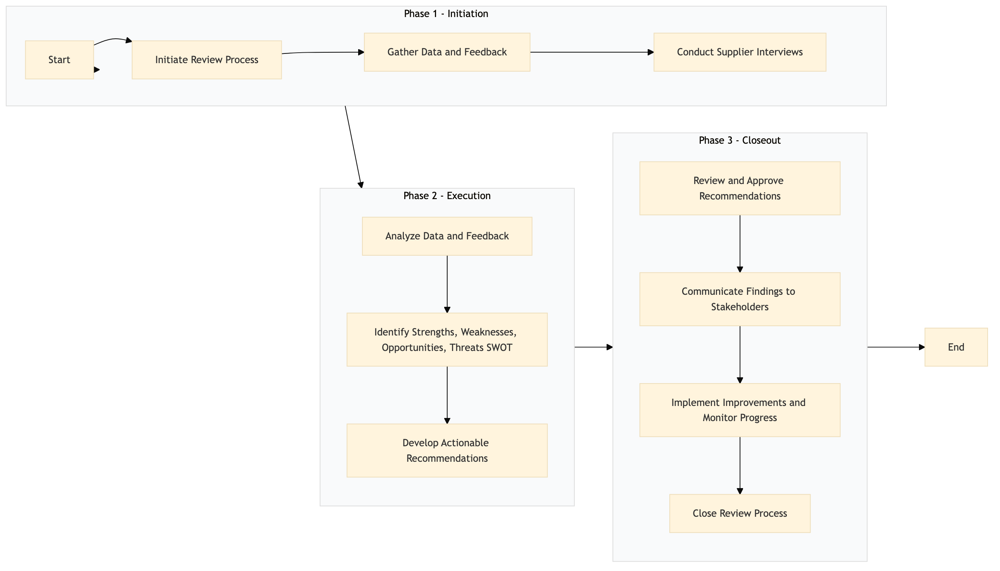

| Role | Steps |
|---|---|
| Procurement Manager | 1.1 3.1 3.2 3.4 |
| Procurement Analyst | 1.2 2.1 |
| Category Manager | 1.3 2.2 2.3 3.3 |
| Senior Procurement Manager | 3.1 |
| Category Director | 3.1 |
| Step | Name | Role | System | Input | Output | KPI | Dec? | Exc? | Pain Point / Risk |
|---|---|---|---|---|---|---|---|---|---|
| 1.1 | Initiate Review Process | Procurement Manager | Birchstreet Procurement, Oracle OPERA Cloud | Supplier list, contract terms, performance metrics | Review schedule and checklist | Less than 1 hour | N | Y | Ensuring all suppliers are included in the review process |
| 1.2 | Gather Data and Feedback | Procurement Analyst | Oracle OPERA Cloud, IDeaS G3 RMS | Supplier invoices, service logs, guest feedback | Data analysis report | Less than 2 days | N | Y | Handling large volumes of data and ensuring accuracy |
| 1.3 | Conduct Supplier Interviews | Procurement Manager, Category Manager | Microsoft Teams, Zoom | Interview questions, supplier contact information | Interview notes and recordings | Less than 1 week | N | Y | Coordinating schedules with suppliers and managing time effectively |
| 2.1 | Analyze Data and Feedback | Procurement Analyst | Microsoft Excel, Power BI | Data analysis report, interview notes | Performance evaluation matrix | Less than 3 days | N | Y | Interpreting complex data and identifying trends |
| 2.2 | Identify Strengths, Weaknesses, Opportunities, Threats (SWOT) | Procurement Manager | Microsoft Word, PowerPoint | Performance evaluation matrix | SWOT analysis report | Less than 2 days | N | Y | Balancing objectivity with subjective judgment |
| 2.3 | Develop Actionable Recommendations | Procurement Manager, Category Manager | Microsoft Word, PowerPoint | SWOT analysis report | Recommendation document | Less than 1 day | N | Y | Creating practical and implementable recommendations |
| 3.1 | Review and Approve Recommendations | Senior Procurement Manager, Category Director | Microsoft Teams, Email | Recommendation document | Approved recommendation document | Less than 2 days | Y | N | Aligning recommendations with business strategy and budget constraints |
| 3.2 | Communicate Findings to Stakeholders | Procurement Manager, Category Manager | Microsoft Teams, Email, PowerPoint | Approved recommendation document | Stakeholder communication plan | Less than 1 day | N | Y | Effectively communicating complex information to diverse stakeholders |
| 3.3 | Implement Improvements and Monitor Progress | Procurement Manager, Category Manager, Supplier Relationship Manager | Oracle OPERA Cloud, Birchstreet Procurement | Approved recommendation document | Progress report | Less than 1 month | Y | N | Ensuring consistent implementation and monitoring supplier performance |
| 3.4 | Close Review Process | Procurement Manager | Oracle OPERA Cloud, Birchstreet Procurement | Progress report | Final review report and documentation | Less than 1 day | N | Y | Documenting all findings and actions taken for future reference |
The Supplier Performance Review process is a structured evaluation of suppliers' performance to ensure they meet Marriott Bonvoy's standards and expectations in terms of quality, cost, delivery, and service. This review helps in maintaining high levels of guest satisfaction and operational efficiency.